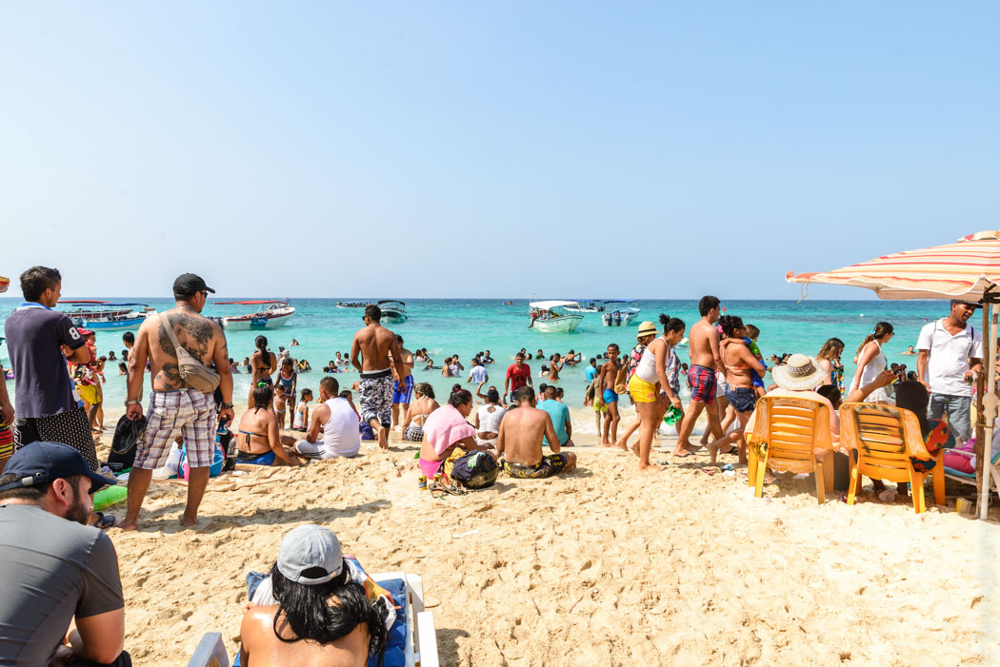
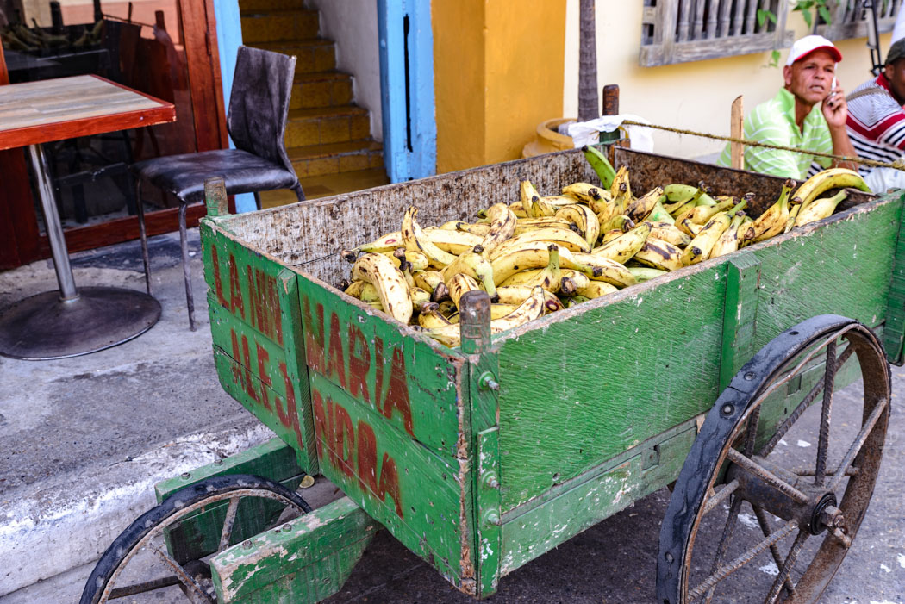
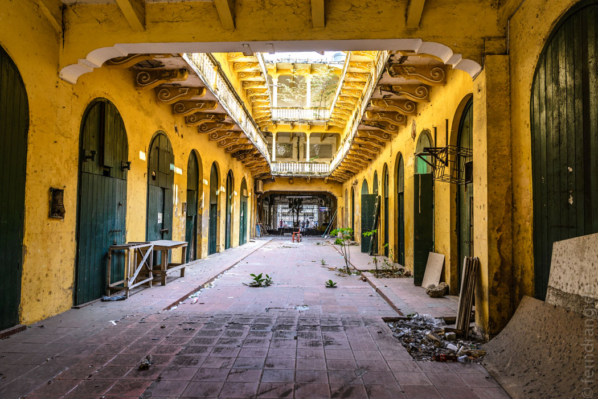

Am nächsten Morgen hatten wir noch etwas Zeit am Strand bevor uns das Boot wieder abgeholt hat. Nach etwas Hickhack wegen der Bezahlung ist uns klargeworden, dass wir die am Vortag begonnene "Boots-Tour" auf dem Rückweg fortsetzen würden. Der nächste Stopp war die grauenhafte Playa Blanca. Am Sonntag war der Strand noch höllischer. Vermutlich waren wir die einzigen nüchternen Menschen dort. Der Aufenthalt sollte fast zwei verdammte Stunden dauern, die wir in abwechselndem Staunen und Schaudern verbracht haben. Die Badegäste legen, wie die Leute in Cartagena überhaupt, sehr viel Wert auf pralle Formen. Hier ist ein riesiger Markt für Brustvergrößerungen und Bikiniverkleinerungen. Die Kombination wird besonders gern gesehen. Den Herren reicht oft eine Bauchvergrößerung.
Zurück in Cartagena haben wir wieder die Casa Marco Polo bezogen, wo uns ein noch schöneres Zimmer im ersten Stock mit einer kleinen Terrasse erwartete. Dort haben wir unsere Augen mithilfe der hübschen Bougainvilleen-Ranken neutralisiert, bevor wir uns wieder in die Stadt wagten. Am Abend mussten wir lernen, wie schwierig es sein kann in einer Stadt voller Restaurants etwas zu essen zu bekommen. Wir haben uns ein zu beliebtes Lokal ausgesucht und mussten Ewigkeiten warten. Das Ceviche war aber so üppig wie köstlich.
 